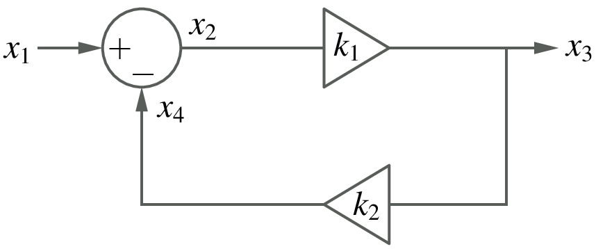
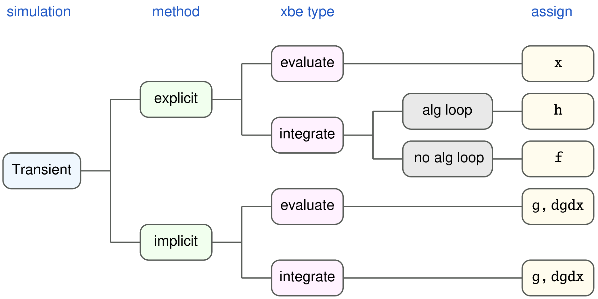
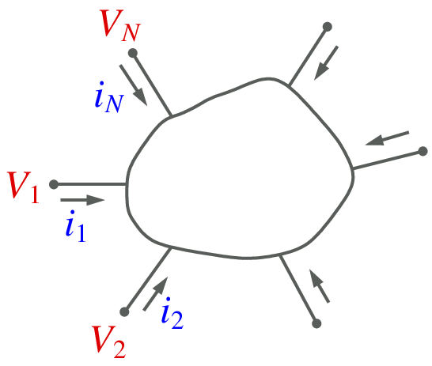
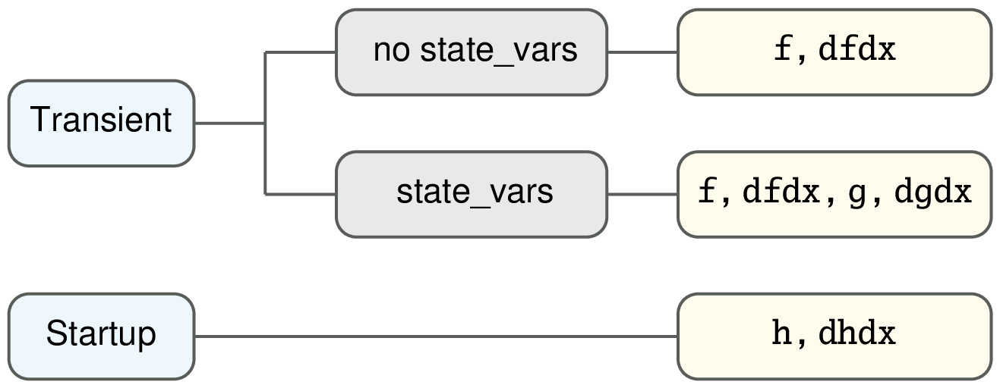

Element templates¶
A very important feature of GSEIM is that it allows the user to add new functionality in the form of library elements, by writing suitable templates. In this section, we look at the syntax of element templates with the help of some examples.
xbe templates¶
- Template files for flow-graph type elements have extension
.xbe(explicit basic element), and they are located in directory$XBE(see GSEIM Organisation). - A flow-graph element template has three types of variables in general: input, output, and auxiliary. Only the input and output variables are made available in the GUI for connection to other elements.
- Flow-graph elements can be of two types:
evaluatetype in which the element equations are of the form \(y = f(x_1,x_2,..)\) where \(y\) is an output and \(x_1\), \(x_2\), etc. are inputs. These elements do not involve time derivatives.integratetype with equations of the form \(\displaystyle\frac{dy}{dt} = f(x_1,x_2,..)\) where \(y\) is an output or auxiliary variable, and \(x_1\), \(x_2\), etc. can be input, output, or auxiliary variables.
In the following, we look at a few representative examples
to explain the functioning of the xbe templates. The
templates described here can be found in directory $XBE.
sum_2.xbe¶
This element is used to obtain
where
\(x_1\),
\(x_2\) are input variables,
\(y\) is the output variable, and
\(k_1\),
\(k_2\) are real parameters.
This is an evaluate type element, i.e., its output can be written
as a function of its inputs, and it does not involve time derivatives.
The overall structure of sum_2.xbe is given below.
1 2 3 4 5 6 7 8 9 10 11 12 13 14 15 16 17 18 19 20 21 22 23 24 25 26 27 28 29 30 31 32 33 34 35 36 37 38 39 40 41 42 43 44 45 46 | xbe name=sum_2 evaluate=yes
# y = k1*x1 + k2*x2
Jacobian: constant
input_vars: x1 x2
output_vars: y
aux_vars:
iparms:
sparms:
rparms: k1=1 k2=1
stparms:
igparms:
outparms: x1 x2 y
n_f= 0
n_g= 1
g_1: x1 x2 y
C:
k1 = X.rprm[nr_k1];
k2 = X.rprm[nr_k2];
if (G.flags[G.i_init_guess]) {
X.val_vr[nvr_y] = k1*X.val_vr[nvr_x1] + k2*X.val_vr[nvr_x2];
return;
}
if (G.flags[G.i_trns] || G.flags[G.i_startup]) {
if (G.flags[G.i_explicit]) {
X.val_vr[nvr_y] = k1*X.val_vr[nvr_x1] + k2*X.val_vr[nvr_x2];
} else if (G.flags[G.i_implicit]) {
if (G.flags[G.i_function]) {
X.g[ng_1] = X.val_vr[nvr_y]
- k1*X.val_vr[nvr_x1] - k2*X.val_vr[nvr_x2];
}
if (G.flags[G.i_jacobian]) {
J.dgdvr[ng_1][nvr_y ] = 1.0;
J.dgdvr[ng_1][nvr_x1] = -k1;
J.dgdvr[ng_1][nvr_x2] = -k2;
}
}
return;
}
if (G.flags[G.i_outvar]) {
X.outprm[no_x1] = X.val_vr[nvr_x1];
X.outprm[no_x2] = X.val_vr[nvr_x2];
X.outprm[no_y ] = X.val_vr[nvr_y ];
return;
}
endC
endxbe
|
Note the following features in the template:
- The element name is specified by the keyword
name. evaluate=yesspecifies the element type.- A line starting with
#is a comment. Jacobian: constantindicates that, when the element equation \(y - k_1x_1 - k_2x_2 = 0\) is differentiated with respect to the variables involved in the equation, we get constants.- The lines
input_varsandoutput_varsspecify the input and output variables of the element, respectively. - There are no integers parameters, string parameters, start-up
parameters, initial guess parameters for this element. The
corresponding fields (
iparms,sparms,stparms,igparms, respectively) are therefore empty. - The names and default values of the real parameters are given
by the
rparmsstatement. (GSEIM also allows integer and string parameters; they are not used insum_2). - The
outparmsstatement specifies the names of output parameters which will be made available by this template during simulation (if requested by the user). - The
n_fandn_gstatements specify the number offandgfunctions for this element. (This aspect will be described in xbe: f, g, h functions.) - The
g_1statement indicates the variables involved in the function \(g_1\). - The C++ section of the template appears
between the
CandendCstatements.
The behaviour of this element is coded in the C++ section of the template. In order to understand this section, we need to see where it fits in the overall scheme, as explained in the following.
There is a GSEIM library preprocessor which picks up the C++ section
of each xbe template (as also the other details such as input
and output variables, real parameters, etc.) and uses it to prepare
a C++ routine for that specific xbe. All of these xbe
routines are then compiled together with the solver code of GSEIM
to prepare the executable file for the solver.
The sum_2 routine (function) receives objects G
and X from the GSEIM main program and is expected to compute
various quantities such function values, output parameters, etc.
Objects G and X may be described as follows.
Gis a global object and is used to pass information about the current time point, type of method being used (implicit or explicit), etc. It also conveys to the element routine, through theflagsarray, what computation the main program is expecting from the element routine in the present call.Xis specific to the element being treated, and it contains variables and parameter values related to that element.
With this background, let us now look at the C++ routine
prepared by the library preprocessor for sum_2.xbe:
1 2 3 4 5 6 7 8 9 10 11 12 13 14 15 16 17 18 19 20 21 22 23 24 25 26 27 28 29 30 31 32 33 34 35 36 37 38 39 40 41 42 43 | void x_sum_2(Global &G,XbeUsr &X,XbeJac &J) {
double x1,x2;
double y;
double k1,k2;
const int nvr_x1 = 0;
const int nvr_x2 = 1;
const int nvr_y = 2;
const int nr_k1 = 0;
const int nr_k2 = 1;
const int no_x1 = 0;
const int no_x2 = 1;
const int no_y = 2;
const int ng_1 = 0;
k1 = X.rprm[nr_k1];
k2 = X.rprm[nr_k2];
if (G.flags[G.i_init_guess]) {
X.val_vr[nvr_y] = k1*X.val_vr[nvr_x1] + k2*X.val_vr[nvr_x2];
return;
}
if (G.flags[G.i_trns] || G.flags[G.i_startup]) {
if (G.flags[G.i_explicit]) {
X.val_vr[nvr_y] = k1*X.val_vr[nvr_x1] + k2*X.val_vr[nvr_x2];
} else if (G.flags[G.i_implicit]) {
if (G.flags[G.i_function]) {
X.g[ng_1] = X.val_vr[nvr_y]
- k1*X.val_vr[nvr_x1] - k2*X.val_vr[nvr_x2];
}
if (G.flags[G.i_jacobian]) {
J.dgdvr[ng_1][nvr_y ] = 1.0;
J.dgdvr[ng_1][nvr_x1] = -k1;
J.dgdvr[ng_1][nvr_x2] = -k2;
}
}
return;
}
if (G.flags[G.i_outvar]) {
X.outprm[no_x1] = X.val_vr[nvr_x1];
X.outprm[no_x2] = X.val_vr[nvr_x2];
X.outprm[no_y ] = X.val_vr[nvr_y ];
return;
}
return;
}
|
Note that the library preprocessor has simply inserted
the C++ section of sum_2.xbe into this routine
without any changes. In addition, it has added the following.
- declaration for
x1,x2,y,k1,k2: This allows the user to use these variables without having to declare them manually. - assignment of integers
nvr_x1,nvr_x2,nvr_y,nr_k1,nr_k2no_x1,no_x2,no_y,ng_1: These constants are convenient in accessing the attributes of thexbe. For example,X.val_vr[nvr_x1]gives the current value ofx1for this element.
It is now easy to see the following points about sum_2.xbe:
If an explicit method is being used, the template evaluates
yin terms ofx1andx2.If an implicit method is being used, the template supplies information about the equation it satisfies, viz.,
\[g_1 \equiv y - (k_1x_1 + k_2x_2) = 0.\]If the main program is requesting the function value, \(g_1(x_1,x_2,y)\) is evaluated; if it is requesting the derivatives, then \(\displaystyle\frac{\partial g_1}{\partial x_1}\), \(\displaystyle\frac{\partial g_1}{\partial x_2}\), \(\displaystyle\frac{\partial g_1}{\partial y}\) are evaluated.
If the program is requesting assignment of output parameters, the parameters listed in the
outparmsstatement ofsum_2.xbeare assigned.
integrator.xbe¶
Next, we consider an element of type integrate, viz., the
integrator, which satisfies
where x and y are the input and
output variables, respectively, and k is a real parameter.
Since GSEIM expects the equations to be written
in the general form
we rewrite Eq. (1) as
For integrate type elements, we also need to specify
the initial or start-up value of the state variable(s).
For the integrator, we will denote that by \(y_0\).
The integrator template is shown below.
1 2 3 4 5 6 7 8 9 10 11 12 13 14 15 16 17 18 19 20 21 22 23 24 25 26 27 28 29 30 31 32 33 34 35 36 37 38 39 40 41 42 43 44 45 46 47 48 49 50 51 52 53 54 55 56 57 58 59 60 61 62 63 | xbe name=integrator integrate=yes
# y = k int (x dt)
Jacobian: constant
input_vars: x
output_vars: y
aux_vars:
iparms:
sparms:
rparms: k=1
stparms: y_st=0
igparms: y_ig=0
outparms: x y
n_f= 1
f_1: d_dt(y)
n_g= 1
g_1: x
C:
prototypes:
variables:
source:
if (G.flags[G.i_one_time_parms]) {
return;
}
if (G.flags[G.i_init_guess]) {
X.val_vr [nvr_y] = X.igprm[nig_y_ig];
return;
}
if (G.flags[G.i_startup]) {
if (G.flags[G.i_explicit]) {
X.val_vr[nvr_y] = X.stprm[nst_y_st];
} else if (G.flags[G.i_implicit]) {
X.h[nf_1] = X.val_vr[nvr_y] - X.stprm[nst_y_st];
}
return;
}
if (G.flags[G.i_outvar]) {
X.outprm[no_x] = X.val_vr[nvr_x];
X.outprm[no_y] = X.val_vr[nvr_y];
return;
}
if (G.flags[G.i_trns]) {
if (G.flags[G.i_explicit]) {
if (G.flags[G.i_alg_loop]) {
X.h[nf_1] = X.val_vr[nvr_y] - X.val_vr_u[nvr_y];
} else {
k = X.rprm[nr_k];
x = X.val_vr[nvr_x];
X.f[nf_1] = k*x;
}
} else if (G.flags[G.i_implicit]) {
k = X.rprm[nr_k];
x = X.val_vr[nvr_x];
if (G.flags[G.i_function]) {
X.g[ng_1] = k*x;
}
if (G.flags[G.i_jacobian]) {
J.dgdvr[ng_1][nvr_x] = k;
}
}
return;
}
endC
endxbe
|
The structure of integrator.xbe is similar to that of
sum_2.xbe; here, we will only point out the
new features.
The start-up parameter y_st corresponds to \(y_0\)
mentioned above. The fact that time derivative of y is
involved in the element equation is indicated by the
f_1 statement.
In the C++ part of the template, we have different sections for start-up and transient simulation. In the start-up section, the equation \(y = y_0\) is handled. In the transient section, if the method is explicit, only the function \(f_1 = k\,x\) is evaluated; if it is implicit, the function \(g_1 = k\,x\) as well as its derivative \(\displaystyle\frac{\partial g_1}{\partial x}\) are computed.
indmc1.xbe¶
We now look at a more complex element of type integrate,
viz., indmc1.xbe, which implements the induction machine model
given by,
where
with
Since the indmc.xbe template is rather long, we will split
it into several pieces for the purpose of discussion. The complete
template can be found in ~/gseim_grc/gseim/xbe/.
Here is the overall template, without the C++ part:
1 2 3 4 5 6 7 8 9 10 11 12 13 14 15 16 17 18 19 20 21 22 23 24 25 26 27 28 29 30 31 32 33 34 35 36 37 38 39 40 41 42 43 44 45 46 47 48 49 50 51 52 53 54 55 56 57 | xbe name=indmc1 integrate=yes
# induction motor model
Jacobian: variable
input_vars: vqs vds tl
output_vars: wrm
aux_vars:
+ psids psidr psiqs psiqr
iparms:
+ poles=4
sparms:
rparms:
+ rs=0.435
+ lls=0.002
+ lm=0.0693
+ llr=0.002
+ rr=0.816
+ j=0.089
+ ls=0
+ lr=0
+ le=0
+ l1=0
+ l2=0
+ l3=0
+ x1=0
+ x2=0
stparms:
+ psids0=0
+ psiqs0=0
+ psidr0=0
+ psiqr0=0
+ wrm0=0
igparms:
outparms:
+ wrm
+ tem
+ vds
+ vqs
+ ia
+ ib
+ ic
n_f= 5
f_1: d_dt(psids)
f_2: d_dt(psiqs)
f_3: d_dt(psidr)
f_4: d_dt(psiqr)
f_5: d_dt(wrm)
n_g= 5
g_1: vds psids psidr
g_2: vqs psiqs psiqr
g_3: wrm psiqr psids psidr
g_4: wrm psidr psiqs psiqr
g_5: tl psids psidr psiqs psiqr
C:
....
....
endC
endxbe
|
The input variables are
vqs, vds, tl, and the output variable is wrm.
In addition, it has internal (auxiliary) variables
psi_ds,
psi_dr,
psi_qs,
psi_qr
which are involved in the model equations.
The statements f_1, f_2, etc.
are used to inform the simulator which derivative is involved in that equation.
The statements g_1, g_2, etc.
are used to indicate which variables are involved in the right-hand
side of the corresponding equation.
In the induction machine equations, there are some one-time calculations, e.g., calculation of \(L_e\) (Eq. (12)), which are not required to be performed in every time step. GSEIM provides a flag for this purpose, as seen from in the following C++ section of the template.
1 2 3 4 5 6 7 8 9 10 11 12 13 14 15 16 17 18 19 20 21 22 23 24 25 26 27 28 29 30 31 | if (G.flags[G.i_one_time_parms]) {
k4 = 0.5*(sqrt(3.0));
lls = X.rprm[nr_lls];
lm = X.rprm[nr_lm ];
llr = X.rprm[nr_llr];
ls = lls + lm;
lr = llr + lm;
le = (ls*lr/lm) - lm;
l1 = lr/(lm*le);
l2 = 1.0 + (lls/lm);
l3 = lls/lm;
X.rprm[nr_ls] = ls;
X.rprm[nr_lr] = lr;
X.rprm[nr_le] = le;
X.rprm[nr_l1] = l1;
X.rprm[nr_l2] = l2;
X.rprm[nr_l3] = l3;
poles = X.iprm[ni_poles];
p = (double)(poles);
x1 = 0.75*p*lm;
x2 = 0.5*p;
X.rprm[nr_x1] = x1;
X.rprm[nr_x2] = x2;
return;
}
|
When this flag is
set by the main program, the template computes \(L_e\) and other one-time
parameters, and saves them in the X.rprm vector. These
parameters need not be computed again during simulation.
Next, we look at the function assignment sections of indmc1.xbe:
1 2 3 4 5 6 7 8 9 10 11 12 13 14 15 16 17 18 19 20 21 22 23 24 25 26 27 28 29 30 31 32 33 34 35 36 37 38 39 40 41 42 43 44 45 46 47 48 49 50 51 52 53 54 55 56 57 58 59 60 61 62 63 64 65 66 67 68 69 70 71 72 73 74 75 76 77 78 79 80 81 82 83 84 85 86 87 88 89 90 91 92 93 94 95 96 97 98 99 100 101 102 103 104 105 106 107 108 109 110 111 112 113 114 115 116 117 118 119 120 121 122 123 124 125 126 127 128 129 130 131 132 133 134 135 136 137 138 139 140 141 142 143 144 145 146 147 148 | if (G.flags[G.i_trns]) {
if (G.flags[G.i_explicit]) {
if (G.flags[G.i_alg_loop]) {
X.h[nf_1] = X.val_aux[na_psids] - X.val_aux_u[na_psids];
X.h[nf_2] = X.val_aux[na_psiqs] - X.val_aux_u[na_psiqs];
X.h[nf_3] = X.val_aux[na_psidr] - X.val_aux_u[na_psidr];
X.h[nf_4] = X.val_aux[na_psiqr] - X.val_aux_u[na_psiqr];
X.h[nf_5] = X.val_vr [nvr_wrm ] - X.val_vr_u [nvr_wrm ];
} else {
rs = X.rprm[nr_rs ];
lls = X.rprm[nr_lls];
lm = X.rprm[nr_lm ];
rr = X.rprm[nr_rr ];
j = X.rprm[nr_j ];
le = X.rprm[nr_le ];
l1 = X.rprm[nr_l1 ];
l2 = X.rprm[nr_l2 ];
l3 = X.rprm[nr_l3 ];
x1 = X.rprm[nr_x1 ];
x2 = X.rprm[nr_x2 ];
vqs = X.val_vr[nvr_vqs];
vds = X.val_vr[nvr_vds];
wrm = X.val_vr[nvr_wrm];
tl = X.val_vr[nvr_tl ];
psids = X.val_aux[na_psids];
psidr = X.val_aux[na_psidr];
psiqs = X.val_aux[na_psiqs];
psiqr = X.val_aux[na_psiqr];
ids = (l1*psids) - (psidr/le);
iqs = (l1*psiqs) - (psiqr/le);
idr = (psids/lm) - (l2*ids);
iqr = (psiqs/lm) - (l2*iqs);
tem0 = x1*(iqs*idr-ids*iqr);
wr = x2*wrm;
X.f[nf_1] = vds-rs*ids;
X.f[nf_2] = vqs-rs*iqs;
X.f[nf_3] = (-wr)*psiqr-rr*idr;
X.f[nf_4] = ( wr)*psidr-rr*iqr;
X.f[nf_5] = (tem0-tl)/j;
}
} else {
rs = X.rprm[nr_rs ];
lls = X.rprm[nr_lls];
lm = X.rprm[nr_lm ];
rr = X.rprm[nr_rr ];
j = X.rprm[nr_j ];
le = X.rprm[nr_le ];
l1 = X.rprm[nr_l1 ];
l2 = X.rprm[nr_l2 ];
l3 = X.rprm[nr_l3 ];
x1 = X.rprm[nr_x1 ];
x2 = X.rprm[nr_x2 ];
vqs = X.val_vr[nvr_vqs];
vds = X.val_vr[nvr_vds];
wrm = X.val_vr[nvr_wrm];
tl = X.val_vr[nvr_tl ];
psids = X.val_aux[na_psids];
psidr = X.val_aux[na_psidr];
psiqs = X.val_aux[na_psiqs];
psiqr = X.val_aux[na_psiqr];
if (G.flags[G.i_function] || G.flags[G.i_jacobian]) {
ids = (l1*psids) - (psidr/le);
iqs = (l1*psiqs) - (psiqr/le);
idr = (psids/lm) - (l2*ids);
iqr = (psiqs/lm) - (l2*iqs);
tem0 = x1*(iqs*idr-ids*iqr);
wr = x2*wrm;
if (G.flags[G.i_function]) {
X.g[ng_1] = vds-rs*ids;
X.g[ng_2] = vqs-rs*iqs;
X.g[ng_3] = (-wr)*psiqr-rr*idr;
X.g[ng_4] = ( wr)*psidr-rr*iqr;
X.g[ng_5] = (tem0-tl)/j;
}
}
if (G.flags[G.i_jacobian]) {
ids_psids = l1;
ids_psidr = -1.0/le;
iqs_psiqs = l1;
iqs_psiqr = -1.0/le;
idr_psids = (1.0/lm) - (l2*ids_psids);
idr_psidr = - (l2*ids_psidr);
iqr_psiqs = (1.0/lm) - (l2*iqs_psiqs);
iqr_psiqr = - (l2*iqs_psiqr);
tem0_iqs = x1*idr;
tem0_idr = x1*iqs;
tem0_ids = -x1*iqr;
tem0_iqr = -x1*ids;
tem0_psids =
tem0_idr*idr_psids +
tem0_ids*ids_psids;
tem0_psidr =
tem0_idr*idr_psidr +
tem0_ids*ids_psidr;
tem0_psiqs =
tem0_iqs*iqs_psiqs +
tem0_iqr*iqr_psiqs;
tem0_psiqr =
tem0_iqs*iqs_psiqr +
tem0_iqr*iqr_psiqr;
wr_wrm = x2;
J.dgdvr[ng_1][nvr_vds] = 1.0;
J.dgdaux[ng_1][na_psids] = -rs*ids_psids;
J.dgdaux[ng_1][na_psidr] = -rs*ids_psidr;
J.dgdvr[ng_2][nvr_vqs] = 1.0;
J.dgdaux[ng_2][na_psiqs] = -rs*iqs_psiqs;
J.dgdaux[ng_2][na_psiqr] = -rs*iqs_psiqr;
J.dgdvr[ng_3][nvr_wrm] = (-wr_wrm)*psiqr;
J.dgdaux[ng_3][na_psiqr] = (-wr);
J.dgdaux[ng_3][na_psids] = -rr*idr_psids;
J.dgdaux[ng_3][na_psidr] = -rr*idr_psidr;
J.dgdvr[ng_4][nvr_wrm] = (wr_wrm)*psidr;
J.dgdaux[ng_4][na_psidr] = wr;
J.dgdaux[ng_4][na_psiqs] = -rr*iqr_psiqs;
J.dgdaux[ng_4][na_psiqr] = -rr*iqr_psiqr;
J.dgdvr[ng_5][nvr_tl] = -1.0/j;
J.dgdaux[ng_5][na_psids] = tem0_psids/j;
J.dgdaux[ng_5][na_psidr] = tem0_psidr/j;
J.dgdaux[ng_5][na_psiqs] = tem0_psiqs/j;
J.dgdaux[ng_5][na_psiqr] = tem0_psiqr/j;
}
}
return;
}
|
In the explicit case,
the function \(f_1\) (i.e.,
X.f[nf_1]) is computed as per the right-hand side of
Eq. (2), and so on.
In the implicit case,
the function \(g_1\) is computed in a similar manner. Note that,
in this case, the derivatives of \(g_1\) with respect to each of the variables involved
in that equation are also computed.
The output parameter computation section of the template is given below:
1 2 3 4 5 6 7 8 9 10 11 12 13 14 15 16 17 18 19 20 21 22 23 24 25 26 27 28 29 30 | if (G.flags[G.i_outvar]) {
X.outprm[no_wrm] = X.val_vr[nvr_wrm];
X.outprm[no_vds] = X.val_vr[nvr_vds];
X.outprm[no_vqs] = X.val_vr[nvr_vqs];
psids = X.val_aux[na_psids];
psidr = X.val_aux[na_psidr];
psiqs = X.val_aux[na_psiqs];
psiqr = X.val_aux[na_psiqr];
le = X.rprm[nr_le];
lm = X.rprm[nr_lm];
l1 = X.rprm[nr_l1];
l2 = X.rprm[nr_l2];
ids = (l1*psids) - (psidr/le);
iqs = (l1*psiqs) - (psiqr/le);
idr = (psids/lm) - (l2*ids);
iqr = (psiqs/lm) - (l2*iqs);
X.outprm[no_ia] = iqs;
X.outprm[no_ib] = -0.5*iqs-k4*ids;
X.outprm[no_ic] = -0.5*iqs+k4*ids;
x1 = X.rprm[nr_x1];
tem0 = x1*(iqs*idr-ids*iqr);
X.outprm[no_tem] = tem0;
return;
}
|
For indmc1.xbe, the output parameter are
wrm, tem, vds, vqs, ia, ib, ic.
To assign the current value of the variable wrm to the
output parameter wrm, we need to assign
X.outprm[no_wrm], and so on. Note that
ia, ib, ic, tem are not readily available (they
are not input, output, or auxiliary variables of this template),
and therefore need to be computed and then assigned.
xbe: f, g, h functions¶
An attractive feature offered by GSEIM is the facility for
the user to make up a new element (xbe). In order to
use this facility effectively, it is important to understand
the working of explicit and implicit methods for solving ODEs
(see Numerical methods for ODEs).
Transient simulation:
Here, we will take two
representative methods, Forward Euler (FE) and Backward Euler (BE),
and explain what information about the ODEs needs to be provided
by the xbe template in each case. The FE method has its limitations
in terms of accuracy and stability and is therefore rarely used.
However, for the purpose of this discussion, it is adequate.
For simplicity, we consider a single ODE of the form,
The discretised forms of Eq. (15) obtained with the FE and BE methods are given by
where \(x_i^n\) is the numerical solution at time \(t_n\). There is a striking difference between these two forms: The right-hand side involves known quantities \((x_1^n,\,x_2^n,\cdots)\) in the FE formula, and unknown quantities \((x_1^{n+1},\,x_2^{n+1},\cdots)\) in the BE formula. This implies that, to obtain \(x_k^{n+1}\), we only need to evaluate the right-hand side of (16) for the FE method, but solve (17) for the BE method.
Assuming that \(u(x_1,\,x_2,\cdots)\) is in general a nonlinear
function, the Newton-Raphson method
is used in GSEIM to solve (17), requiring the function value \(u\)
as well as the derivative (Jacobian) values
\(\displaystyle\frac{\partial u}{\partial x_1}, \displaystyle\frac{\partial u}{\partial x_2}, \cdots\).
This brings us to the following requirement from an xbe template of
integrate type.
Transient simulation with explicit methods: Supply
\(u(x_1,\,x_2,\cdots,\,t)\). The function \(u\) in (15)
is denoted by f in GSEIM terminology.
Transient simulation with implicit methods: Supply
\(u(x_1,\,x_2,\cdots,\,t)\) as well as
\(\displaystyle\frac{\partial u}{\partial x_1}, \displaystyle\frac{\partial u}{\partial x_2}, \cdots\).
These are denoted by g, dgdx in GSEIM terminology.
Note that, since there are multiple ODEs in general in an integrate type
xbe template, f, g are one-dimensional vectors, and dgdx is a
two-dimensional vector.
In xbe’s of type evaluate, the equations are of the form,
where
\(x_1\),
\(x_2\),
\(\cdots\)
are the input variables, and
\(y\)
is the output variable.
If an explicit method is being used, GSEIM expects
the xbe template to return
\(y\).
If an implicit method is being used, GSEIM expects
information about a function
\(v\), defined as
In this case, the xbe template is expected to return
\(v\) and its derivatives with respect to the variables
involved in that equation. The variables to be assigned in
the xbe template are the vectors g and dgdx.
Start-up simulation: In some situations, it is required to assign specific values to the state variables in the system (such as \(x_k\) in (15)), and solve for the remaining variables. We will refer to this type of simulation as Start-up simulation.
(15) in the start-up scenario is written as
where \(x_k = x_k^{st}\) is the start-up value. If an explicit
method is being used, the xbe template simply needs to make the
above assignment. If an implicit method is being used, (20)
needs to be rewritten as
and \(w\) needs to be returned by the xbe template (in the form
of vector h).
For evaluate type elements, the start-up situation can be handled in
the same manner as the transient situation.
Algebraic loops: The flow-graph approach, with each element having input and output ports, runs into problems if there are Algebraic loops in the system. For example, consider the following system.
{kind=link}
In this system, there are no time derivatives. It is therefore sufficient to consider any time \(t_n\) and see if we can obtain \(x_2^n\), \(x_3^n\), \(x_4^n\) in terms of the input \(x_1^n\). The following equations must be satisfied:
In an explicit method, we treat \(x_1^n\) as the source, and then compute variables one by one, following the arrows in the figure, by evaluating Eqs. (22) to (24) in succession. This approach leads to a problem: The three equations are supposed to be valid simultaneously. However, since (24) is evaluated after (23), the value of \(x_3^n\) is not consistently computed. This type of conflict occurs when there is an algebraic loop in the system, i.e., there is a loop in which the variables are related through purely {it algebraic} equations, not involving time derivatives.
If an implicit method is used for the above system, Eqs. (22) to (24) are solved simultaneously (as an algebraic system of equations), and there is no conflict.
Now consider applying an explicit method to a system which has
both integrate type elements (involving time derivatives)
and evaluate type elements. If there is an algebraic loop
in the system, a consistent solution can be obtained in two steps:
- Update the outputs of
integratetype elements. - Solve the algebraic system of equations involving the remaining variables using a suitable method (GSEIM uses the Newton-Raphson method.
The second step is implemented in GSEIM by holding the updated output
values of integrate type elements (denoted by \(x^u\))
constant, and solving the resulting algebraic set of equations.
In other words, for integrate time elements, we need to replace
the original equation
with
and the xbe template in this situation should return
\(h \equiv x_k - x_k^u\).
Summary: The above points regarding xbe templates can be summarised as follows.
{kind=link}
{kind=link}
ebe templates¶
- Template files for electrical type elements have extension
.ebe(electrical basic element), and they are located in directory$EBE(see GSEIM Organisation). - An electrical element template has nodes (which are used in
wiring) and some other variables in general:
- state variables which may be used in elements whose equations involve time derivatives
- auxiliary variables which serve as additional variables to be used in implementing the element equations
In the following, we look at a few representative examples
to explain the functioning of the ebe templates. The
templates described here can be found in $EBE.
r.ebe¶
This is the resistor element with nodes p and n, and
resistance r. The template r.ebe is reproduced below.
1 2 3 4 5 6 7 8 9 10 11 12 13 14 15 16 17 18 19 20 21 22 23 24 25 26 27 28 29 30 31 32 33 34 35 36 37 38 39 40 41 42 43 44 45 46 47 48 49 50 51 52 53 54 55 56 57 58 59 60 61 62 63 64 65 66 67 68 69 70 71 72 73 74 75 76 77 78 79 80 81 82 83 84 85 86 87 88 89 90 91 | ebe name=r
Jacobian: constant
nodes: p n
state_vars:
aux_vars:
aux_vars_startup:
x_vars:
iparms:
sparms:
rparms:
+ r=1.0
+ k_scale=1
+ g=0
stparms:
igparms:
outparms: i v
n_f=2
f_1: v(p) v(n)
f_2: v(p) v(n)
n_g=0
n_h=2
h_1: v(p) v(n)
h_2: v(p) v(n)
C:
variables:
double vp,vn,r_eff;
source:
if (G.flags[G.i_one_time_parms]) {
r = X.rprm[nr_r];
k_scale = X.rprm[nr_k_scale];
if (r*k_scale < 1.0e-9) {
cout << "r.ebe: r too small!" << endl;
cout << "r.ebe: r=" << r << endl;
cout << "r.ebe: k_scale=" << k_scale << endl;
exit(1);
}
r_eff = r*k_scale;
g = 1.0e0/r_eff;
X.rprm[nr_g] = g;
return;
}
if (G.flags[G.i_dc] || G.flags[G.i_trns]) {
vp = X.val_nd[nnd_p];
vn = X.val_nd[nnd_n];
g = X.rprm[nr_g];
if (G.flags[G.i_function]) {
X.f[nf_1] = g*(vp-vn);
X.f[nf_2] = -X.f[nf_1];
}
if (G.flags[G.i_jacobian]) {
J.dfdv[nf_1][nnd_p] = g;
J.dfdv[nf_1][nnd_n] = -g;
J.dfdv[nf_2][nnd_p] = -g;
J.dfdv[nf_2][nnd_n] = g;
}
return;
}
if (G.flags[G.i_startup]) {
vp = X.val_nd[nnd_p];
vn = X.val_nd[nnd_n];
g = X.rprm[nr_g];
if (G.flags[G.i_function]) {
X.h[nh_1] = g*(vp-vn);
X.h[nh_2] = -X.f[nf_1];
}
if (G.flags[G.i_jacobian]) {
J.dhdv[nh_1][nnd_p] = g;
J.dhdv[nh_1][nnd_n] = -g;
J.dhdv[nh_2][nnd_p] = -g;
J.dhdv[nh_2][nnd_n] = g;
}
return;
}
if (G.flags[G.i_outvar]) {
g = X.rprm[nr_g];
X.outprm[no_v] = X.val_nd[nnd_p]-X.val_nd[nnd_n];
X.outprm[no_i] = g*(X.val_nd[nnd_p]-X.val_nd[nnd_n]);
return;
}
if (G.flags[G.i_init_guess]) {
X.val_nd[nnd_n] = 0.0;
X.val_nd[nnd_p] = 0.0;
return;
}
endC
endebe
|
There are several common aspects between xbe templates
and ebe templates. Here, we will point out mainly features
which are different for ebe templates:
- The element name is specified by the keyword
name. Jacobian: constantindicates that the element equations have constant derivatives with respect to the variables involved in those equations.- The
state_varsstatement is used to list variables related to time derivatives. Since the resistor element does not involve time derivatives, there are no state_vars. - The
aux_varsandaux_vars_startupstatements are used to list auxiliary variables used in implementing the element equations in transient and start-up simulation, respectively. For the resistor, they are not required. - The
x_varsstatement gives the flow-graph type nodes of the element. The resistor has only electrical nodes, and the x_vars list is empty. - In the real parameters (
rparms) field, the resistance valuer, the scaling factork_scale, and the conductancegare listed. Of these,randk_scaleare supplied by the user whilegis assigned internally as a one-time calculation. - The
n_f,``n_g``,n_hstatements specify the number off,g, andhfunctions for this element. (see ebe: f, g, h functions.) - In the
Cpart of the template, function and Jacobian values are assigned. Note that electrical elements are always handled with implicit methods.
The equations for the resistor template are given by
where
\(i_p\) and
\(i_n\) are currents entering the resistor (from the external
circuit), and
\(v_p\) and
\(v_n\) are the node voltages, given by
X.val_nd[nnd_p] and
X.val_nd[nnd_n], respectively.
Note that the functions
X.f[nf_1],
X.f[nf_2]
correspond to
\(i_p\) and
\(i_n\)
in transient simulation, and
X.h[nh_1],
X.h[nh_2]
correspond to the same currents in start-up simulation.
diode_r.ebe¶
diode_r is a simple diode model, which behaves like
a resistance r_off when the diode is not conducting, and
a resistance r_on with a source v_on in series when
the diode is conducting (see the figure below).
{kind=link}
If the diode is conducting, the element equations are given by
If the diode is not conducting, the element equations are given by
Incorporation of the above equations can be clearly seen in diode_r.ebe,
reproduced below.
1 2 3 4 5 6 7 8 9 10 11 12 13 14 15 16 17 18 19 20 21 22 23 24 25 26 27 28 29 30 31 32 33 34 35 36 37 38 39 40 41 42 43 44 45 46 47 48 49 50 51 52 53 54 55 56 57 58 59 60 61 62 63 64 65 66 67 68 69 70 71 72 73 74 75 76 77 78 79 80 81 82 83 84 85 86 87 88 89 90 91 92 93 94 95 96 97 98 99 100 101 102 103 104 105 106 | ebe name=diode_r
Jacobian: variable
nodes: p n
state_vars:
aux_vars:
aux_vars_startup:
x_vars:
iparms:
sparms:
rparms:
+ r_on=0.1
+ r_off=1M
+ v_on=0
+ v_on_1=0
stparms:
igparms:
outparms: i v
n_f=2
f_1: v(p) v(n)
f_2: v(p) v(n)
n_g=0
n_h=2
h_1: v(p) v(n)
h_2: v(p) v(n)
C:
variables:
double vp,vn,r,g,v0;
source:
if (G.flags[G.i_one_time_parms]) {
r_on = X.rprm[nr_r_on ];
r_off = X.rprm[nr_r_off];
v_on = X.rprm[nr_v_on ];
v_on_1 = v_on*r_off/(r_off-r_on);
X.rprm[nr_v_on_1] = v_on_1;
return;
}
v_on = X.rprm[nr_v_on];
if (G.flags[G.i_dc] || G.flags[G.i_trns] || G.flags[G.i_startup]) {
vp = X.val_nd[nnd_p];
vn = X.val_nd[nnd_n];
v0 = vp-vn;
r_on = X.rprm[nr_r_on ];
r_off = X.rprm[nr_r_off ];
v_on_1 = X.rprm[nr_v_on_1];
if (v0 >= v_on_1) {
r = r_on;
} else {
r = r_off;
}
if (r < 1.0e-9) {
cout << "diode_r: r too small!" << endl;
exit(1);
}
g = 1.0/r;
}
if (G.flags[G.i_dc] || G.flags[G.i_trns]) {
if (G.flags[G.i_function]) {
if (v0 >= v_on_1) {
X.f[nf_1] = g*(vp-vn)-g*v_on;
} else {
X.f[nf_1] = g*(vp-vn);
}
X.f[nf_2] = -X.f[nf_1];
}
if (G.flags[G.i_jacobian]) {
J.dfdv[nf_1][nnd_p] = g;
J.dfdv[nf_1][nnd_n] = -g;
J.dfdv[nf_2][nnd_p] = -g;
J.dfdv[nf_2][nnd_n] = g;
}
return;
}
if (G.flags[G.i_startup]) {
if (G.flags[G.i_function]) {
if (v0 >= v_on_1) {
X.h[nh_1] = g*(vp-vn)-g*v_on;
} else {
X.h[nh_1] = g*(vp-vn);
}
X.h[nh_2] = -X.h[nh_1];
}
if (G.flags[G.i_jacobian]) {
J.dhdv[nh_1][nnd_p] = g;
J.dhdv[nh_1][nnd_n] = -g;
J.dhdv[nh_2][nnd_p] = -g;
J.dhdv[nh_2][nnd_n] = g;
}
return;
}
if (G.flags[G.i_outvar]) {
X.outprm[no_v] = X.val_nd[nnd_p]-X.val_nd[nnd_n];
X.outprm[no_i] = X.cur_nd[nnd_p];
return;
}
if (G.flags[G.i_init_guess]) {
X.val_nd[nnd_n] = 0.0;
X.val_nd[nnd_p] = 0.0;
return;
}
endC
endebe
|
The diode_r.ebe template is similar to r.ebe in many respects.
The key differences are
- \(V_p\) and \(V_n\) are used to figure out if the diode is conducting or not. For the resistor, no such decision is required.
- The fact that the Jacobian values depend on
\(V_p\) and
\(V_n\) is indicated by the statement,
Jacobian: variable.
c.ebe¶
This is the capacitor element with nodes p and n, and
capacitance c. The template is reproduced below.
1 2 3 4 5 6 7 8 9 10 11 12 13 14 15 16 17 18 19 20 21 22 23 24 25 26 27 28 29 30 31 32 33 34 35 36 37 38 39 40 41 42 43 44 45 46 47 48 49 50 51 52 53 54 55 56 57 58 59 60 61 62 63 64 65 66 67 68 69 70 71 72 73 74 75 76 77 78 79 80 | ebe name=c
Jacobian: constant
nodes: p n
state_vars: qp qm
aux_vars:
aux_vars_startup: cur_p
x_vars:
iparms:
sparms:
rparms:
+ c=1.0
+ k_scale=1
stparms: v0=0
igparms:
outparms: i v
n_f=2
f_1: d_dt(qp)
f_2: d_dt(qm)
n_g=2
g_1: qp v(p) v(n)
g_2: qm v(p) v(n)
n_h=3
h_1: cur_p
h_2: cur_p
h_3: v(p) v(n)
C:
variables:
double c1;
source:
c = X.rprm[nr_c];
k_scale = X.rprm[nr_k_scale];
c1 = c*k_scale;
if (G.flags[G.i_dc] || G.flags[G.i_trns]) {
if (G.flags[G.i_function]) {
X.f[nf_1] = 0.0;
X.f[nf_2] = 0.0;
X.g[ng_1] = c1*(X.val_nd[nnd_p]-X.val_nd[nnd_n]);
X.g[ng_2] = -X.g[ng_1];
}
if (G.flags[G.i_jacobian]) {
J.dgdv[ng_1][nnd_p] = c1;
J.dgdv[ng_1][nnd_n] = -c1;
J.dgdv[ng_2][nnd_p] = -c1;
J.dgdv[ng_2][nnd_n] = c1;
}
X.val_stv[nstv_qp] = c1*(X.val_nd[nnd_p]-X.val_nd[nnd_n]);
X.val_stv[nstv_qm] = -X.val_stv[nstv_qp];
}
if (G.flags[G.i_startup]) {
v0 = X.stprm[nst_v0];
cur_p = X.val_auxs[nas_cur_p];
if (G.flags[G.i_function]) {
X.h[nh_1] = cur_p;
X.h[nh_2] = -cur_p;
X.h[nh_3] = X.val_nd[nnd_p]-X.val_nd[nnd_n]-v0;
}
if (G.flags[G.i_jacobian]) {
J.dhdauxs[nh_1][nas_cur_p] = 1.0;
J.dhdauxs[nh_2][nas_cur_p] = -1.0;
J.dhdv [nh_3][nnd_p ] = 1.0;
J.dhdv [nh_3][nnd_n ] = -1.0;
}
X.val_stv[nstv_qp] = c1*(X.val_nd[nnd_p]-X.val_nd[nnd_n]);
X.val_stv[nstv_qm] = -X.val_stv[nstv_qp];
return;
}
if (G.flags[G.i_outvar]) {
X.outprm[no_v] = X.val_nd[nnd_p]-X.val_nd[nnd_n];
X.outprm[no_i] = X.cur_nd[nnd_p];
return;
}
if (G.flags[G.i_init_guess]) {
X.val_nd[nnd_p] = 0.0;
X.val_nd[nnd_n] = 0.0;
return;
}
endC
endebe
|
The capacitor template has significant differences with respect to the resistor template since the element equations for a capacitor involve time derivatives. The following points may be noted.
- There are two state variables:
qpandqm; they correspond to the charges \(Q_p\) and \(Q_m\), respectively (see the equations below). - There is a start-up auxiliary variable called
cur_p. - In addition to the
fandhequations, the capacitor templates also involvesgfunctions.
In order to understand the functioning of c.ebe, let us look at
the equations the capacitor must satisfy:
where
Eqs. (31) and (32) are implemented using the
g functions in the transient simulation section of the
template. The f functions, which are supposed to specify
\(i_p\) and \(i_n\), are 0 in this case because the
dependence of these currents on the derivatives
\(\displaystyle\frac{dQ_p}{dt}\) and
\(\displaystyle\frac{dQ_m}{dt}\) is already conveyed to
the simulator in the f_1: and f_2: statements.
Start-up simulation: In this situation, the state variables are held constant at their specified values, and the circuit equations are solved with those constraints. In start-up simulation, the capacitor behaves like a dc voltage source, satisfying the equations,
where \(V_0\) is specified by the start-up parameter
v0 in the template. The current \(i_1\) is an
auxiliary variable here and corresponds to cur_p in
the template. Implementation of these equations can be seen
in the start-up part in the C part of the template.
l.ebe¶
This is the inductor element with nodes p and n, and
inductance l. The template is reproduced below.
1 2 3 4 5 6 7 8 9 10 11 12 13 14 15 16 17 18 19 20 21 22 23 24 25 26 27 28 29 30 31 32 33 34 35 36 37 38 39 40 41 42 43 44 45 46 47 48 49 50 51 52 53 54 55 56 57 58 59 60 61 62 63 64 65 66 | ebe name=l
Jacobian: constant
nodes: p n
state_vars:
aux_vars: cur_p
aux_vars_startup:
x_vars:
iparms:
sparms:
rparms:
+ l=1.0
+ k_scale=1
stparms: i0=0
igparms:
outparms: i v
n_f=3
f_1: cur_p
f_2: cur_p
f_3: d_dt(cur_p) v(p) v(n)
n_g=0
n_h=2
h_1:
h_2:
C:
variables:
double l1;
source:
if (G.flags[G.i_dc] || G.flags[G.i_trns]) {
l = X.rprm[nr_l];
k_scale = X.rprm[nr_k_scale];
l1 = l*k_scale;
cur_p = X.val_aux[na_cur_p];
if (G.flags[G.i_function]) {
X.f[nf_1] = cur_p;
X.f[nf_2] = -cur_p;
X.f[nf_3] = (X.val_nd[nnd_p]-X.val_nd[nnd_n])/l1;
}
if (G.flags[G.i_jacobian]) {
J.dfdaux[nf_1][na_cur_p] = 1.0;
J.dfdaux[nf_2][na_cur_p] = -1.0;
J.dfdv [nf_3][nnd_p ] = 1.0/l1;
J.dfdv [nf_3][nnd_n ] = -1.0/l1;
}
}
if (G.flags[G.i_startup]) {
i0 = X.stprm[nst_i0];
if (G.flags[G.i_function]) {
X.h[nh_1] = i0;
X.h[nh_2] = -i0;
}
X.val_aux[na_cur_p] = i0;
return;
}
if (G.flags[G.i_outvar]) {
X.outprm[no_v] = X.val_nd[nnd_p]-X.val_nd[nnd_n];
X.outprm[no_i] = X.cur_nd[nnd_p];
return;
}
if (G.flags[G.i_init_guess]) {
X.val_nd[nnd_p] = 0.0;
X.val_nd[nnd_n] = 0.0;
return;
}
endC
endebe
|
There is a significant difference between c.ebe and l.ebe
although both of these involve a time derivative. The difference
arises because the capacitor involves a voltage derivative whereas
the inductor involves a current derivative. In transient simulation,
the inductor equations are
These equations have been implemented in l.ebe using an auxiliary variable
cur_p which corresponds to \(i_1\) in the above equations. Although the
inductor current is a “state variable” (in the sense that the element behaviour
depends on \(\displaystyle\frac{di_L}{dt}\)), it is not declared in the
state_vars field of the template because of the way we have implemented the
inductor equations.
In start-up simulation, the indcutor equations are simply,
where \(i_0\) corresponds to i0 in the stparms field.
ebe: f, g, h functions¶
Consider an electrical element with \(N\) nodes, as shown below.
{kind=link}
Transient simulation:
In GSEIM, electrical elements are treated using
modified nodal analysis for writing
circuit equations and
implicit methods for solving ODEs,
leading to systematic assembly
of circuit equations. If the resulting set of equations
is nonlinear, the Newton-Raphson iterative
method is used to obtain the solution (at each time point).
An ebe template must provide currents
\(i_1\),
\(i_2\),
\(\cdots\),
\(i_N\), and their derivatives,
given the node voltages,
\(V_1\),
\(V_2\),
\(\cdots\),
\(V_N\).
For some ebe’s, additional equations are required, and functions
related to those must also be computed by the ebe template
(e.g., see the inductor template, l.ebe).
The functions corresponding to the node currents as well
as additional equations (if any) are passed
by the template to the main program through vector f.
When there are state_vars involved in the ebe equations,
the template needs to compute the associated functions and pass
them to the main programs through vector g (e.g., see the
computation of qp and qm in the capacitor template,
c.ebe).
Start-up simulation:
For elements such as r.ebe, equations used for
start-up simulation are the same as those used
in transient simulation. For other elements, such as c.ebe, they
are different in transient and start-up simulation. In either
case, GSEIM expects the corresponding function
values to be supplied by the ebe template through vector h.
In both transient and start-up simulation, GSEIM uses the Newton-Raphson method, and the relevant derivatives (Jacobian values) also need to be computed by the ebe template.
The following figure summarises our discussion with respect to ebe templates.
{kind=link}